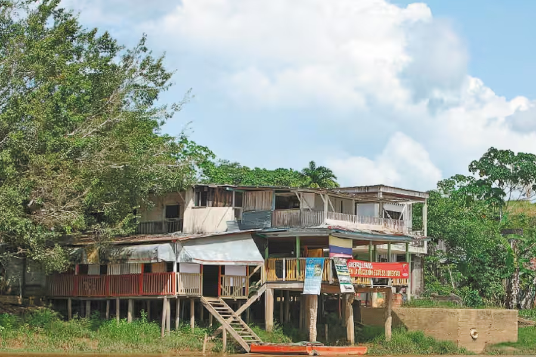

Almario busca tumbar acusación en su contra por crimen de la familia Turbay Cote
Luis Fernando Almario está siendo investigado por su presunta participación en 30 crímenes en contra de la familia Turbay Cote,...
Escolta de alias Pichi reclutaría a exmilitares para convertirlos en mercenarios
A la cárcel señalados responsables del secuestro y desaparición de comerciante

Caso de reparación a víctima de conflicto terminó en pelea entre sus abogados
En 2024 se han presentado 745 feminicidios en Colombia, según la Defensoría
Reficar: ¿Por qué la justicia dice que no hubo billonario desfalco en escándalo?
Estos son los puntos claves para entender por qué la justicia dice que no hubo perdida de dinero en el caso Reficar.
Procuraduría investiga presunto abuso sexual a seis niñas en un colegio de Ibagué
El caso salió a la luz pública a través de denuncias difundidas por medios de comunicación locales.